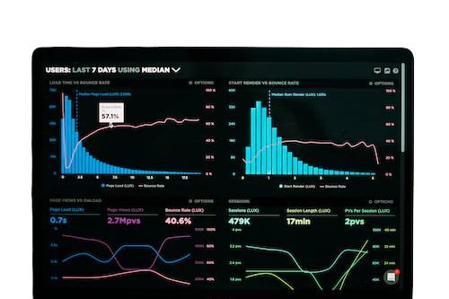

Financial Modeling
Building Microsoft Excel models, that forecasts a business’s financial performance into the future.
The forecast is typically based on the company’s
historical performance and assumptions about the future, and requires preparing an income statement,
balance sheet, cash flow statement, and supporting schedules
Financial models are used to make decisions about:
- Raising capital (debt and/or equity)
- Making acquisitions (businesses and/or assets)
- Budgeting and forecasting (planning for the years
- Valuing a business
Credit Analysis
Assessing the creditworthiness of an individual or company to determine the likelihood that they will honor
their financial obligations. I evaluate a borrower’s past financial and credit history to
determine their financial health and their ability to repay credit advanced to them by a lender.
Credit Analysis involves:
- Evaluating Credit Risk
- Assessing Credit limits for existing customers
- Analyzing Financial Data

Financial Report Analysis
Involves in gathering data, organizing information, analyzing historical results, making forecasts
and projections, making recommendations, and generating Excel models, presentations, and reports.
Financial Report Analysis involves:
- Gather Data and Information
- Organize information
- Analyzing Financial Data
- Making Forecasts and Projections